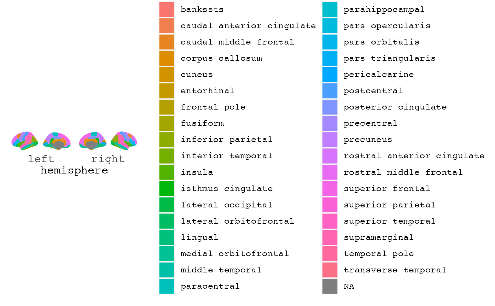
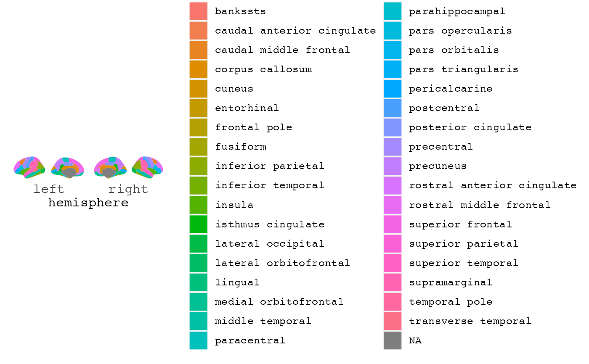

Plotting results from analyses done on data derived from brain segmentations is a common need, but may be quite laborious. Results from such analyses are usually easier to interpret if the plot can mimic the shape and position in the brain it represents.
ggseg plots and returns a ggplot object of plotted
aparc regions. Is superseded by the new geom_brain.
ggseg(
.data = NULL,
atlas = "dk",
position = "dispersed",
view = NULL,
hemisphere = NULL,
adapt_scales = TRUE,
...
)Arguments
- .data
A .data.frame to use for plot aesthetics. Should include a column called "region" corresponding to aparc regions.
- atlas
Either a string with the name of atlas to use, or a .data.frame containing atlas information (i.e. pre-loaded atlas).
- position
String choosing how to view the .data. Either "dispersed"[default] or "stacked".
- view
String to choose view of the .data. Any of c("lateral","medial")[default].
- hemisphere
String to choose hemisphere to plot. Any of c("left","right")[default].
- adapt_scales
if
TRUE, then the axes will be hemisphere without ticks. IfFALSE, then will be latitude longitude values. Also affected bypositionargument- ...
other options sent to geom_polygon for plotting, including mapping aes (cannot include x, y, and group aesthetics).
Value
a ggplot object
Details
This package contains data from various brain parcellations, with convenient functions to inspect the results directly on a brain-plot wither with ggplot (2D polygons).
- `dk`
The Desikan-Killiany Cortical Atlas [default], FreeSurfer cortical segmentations.
- `aseg`
FreeSurfer automatic subcortical segmentation of a brain volume
See also
Useful links:
[ggplot2][ggplot], [aes][aes], [geom_polygon][geom_polygon], [coord_fixed][coord_fixed]
Examples
library(ggplot2)
ggseg()
 ggseg(mapping=aes(fill=region))

if (FALSE) {
ggseg(colour="black", size=.7, mapping=aes(fill=region)) + theme_void()
ggseg(position = "stacked")
ggseg(adapt_scales = FALSE)
}
ggseg(mapping=aes(fill=region))

if (FALSE) {
ggseg(colour="black", size=.7, mapping=aes(fill=region)) + theme_void()
ggseg(position = "stacked")
ggseg(adapt_scales = FALSE)
}